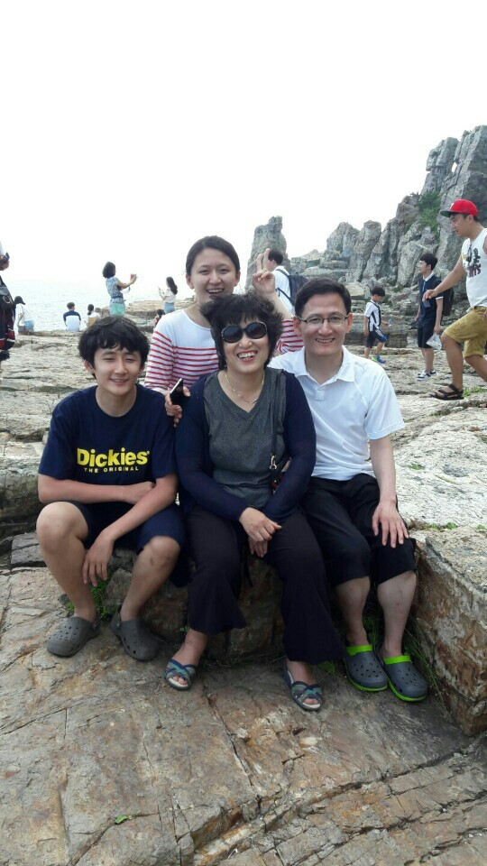

우리 가족은 현재 송파구 마천동에 17년 째 거주중이다. 내가 4살때 쯤 이사를 온 후 지금까지 살고있다. 마천동의 장점은 아마도 남한산성이 가까워서 산의 정기를 받을 수도 있다는 점이고, 단점은 내가 좋아하는 편의시설이 적게 존재한다는 점이다.
위의 사진은 우리 가족의 단체사진이다. 2016년 여름 부산에 놀러갔을 때 태종대에서 찍은 사진이다. 현재 엄마의 폰 배경화면이기도 하다. 언제 바꿀지 궁금하다. 그래도 표정이 다들 잘 나와서 좋은 사진이다.